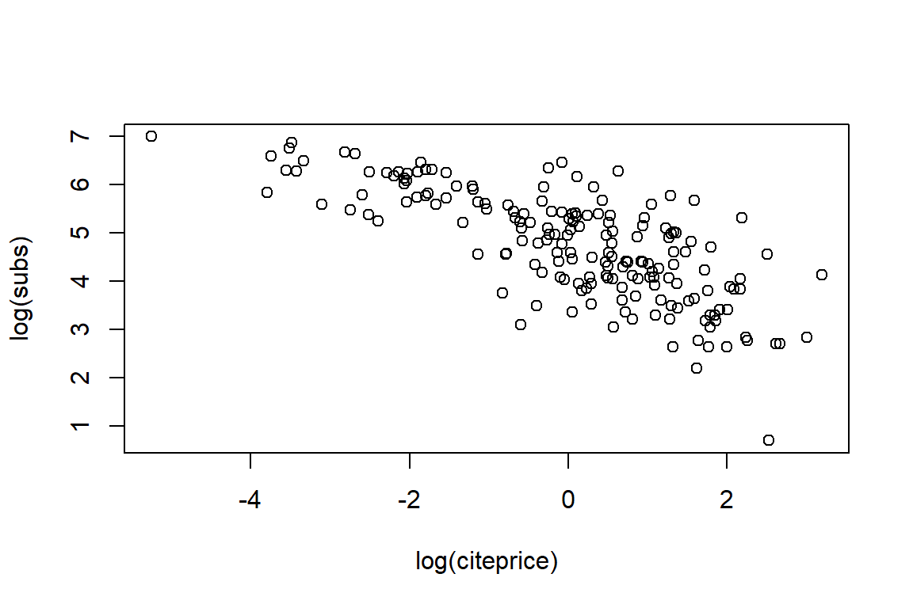
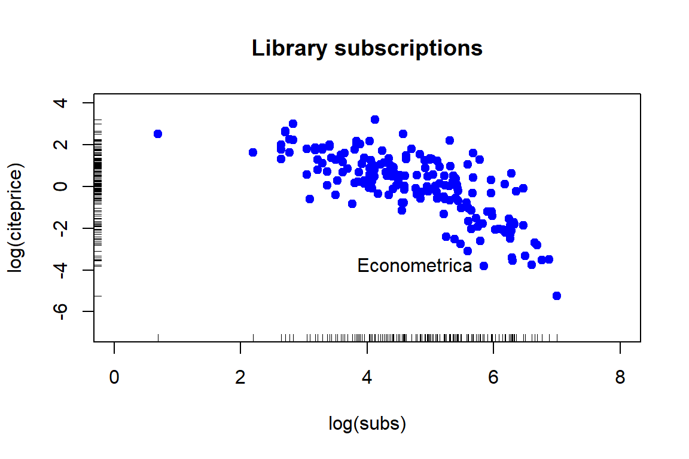

4 Getting started with data in R
4.1 Importing data
Importing data into R to start your analyses-it should be the easiest step. Unfortunately, this is almost never the case. Data come in all sorts of formats, ranging from CSV and text files and statistical software files to databases and HTML data. Knowing which approach to use is key to getting started with the actual analysis. (Quote from DataCamp’s ‘Importing Data in R (Part 1)’ course)
# what is the current working directory?
getwd()
# which files are currently stored in my working directory?
dir()Specify the path where the data are stored.
# where are my data files?
path <- file.path('data')
# how to find a path name on your computer?
# file.choose()4.1.1 Importing a .csv file with read.csv()
The utils package, which is automatically loaded in your R session on startup, can import CSV files with the read.csv() function. You will now load a data set on swimming pools in Brisbane, Australia (source: data.gov.au). The file contains the column names in the first row. It uses a comma to separate values within rows. (Quote and example from DataCamp’s ‘Importing Data in R (Part 1)’ course)
path.pools <- file.path(path, "swimming_pools.csv")
pools <- read.csv(path.pools)
str(pools)'data.frame': 20 obs. of 4 variables:
$ Name : Factor w/ 20 levels "Acacia Ridge Leisure Centre",..: 1 2 3 4 5 6 19 7 8 9 ...
$ Address : Factor w/ 20 levels "1 Fairlead Crescent, Manly",..: 5 20 18 10 9 11 6 15 12 17 ...
$ Latitude : num -27.6 -27.6 -27.6 -27.5 -27.4 ...
$ Longitude: num 153 153 153 153 153 ...With stringsAsFactors, you can tell R whether it should convert strings in the flat file to factors.
pools <- read.csv(path.pools, stringsAsFactors = FALSE)
str(pools)'data.frame': 20 obs. of 4 variables:
$ Name : chr "Acacia Ridge Leisure Centre" "Bellbowrie Pool" "Carole Park" "Centenary Pool (inner City)" ...
$ Address : chr "1391 Beaudesert Road, Acacia Ridge" "Sugarwood Street, Bellbowrie" "Cnr Boundary Road and Waterford Road Wacol" "400 Gregory Terrace, Spring Hill" ...
$ Latitude : num -27.6 -27.6 -27.6 -27.5 -27.4 ...
$ Longitude: num 153 153 153 153 153 ...4.1.2 Importing a .txt file: the Danish fire insurance data
read.table() is the most basic importing function; you can specify tons of different arguments in this function. The header argument defaults to FALSE and the sep argument is “” by default. (Quote from DataCamp’s ‘Importing Data in R (Part 1)’ course)
path.fire <- file.path(path, "danish.txt")
danish <- read.table(path.fire, header = TRUE)
head(danish) # use the argument 'n' to display less/more records Date Loss.in.DKM
1 01/03/1980 1.684
2 01/04/1980 2.094
3 01/05/1980 1.733
4 01/07/1980 1.780
5 01/07/1980 4.612
6 01/10/1980 8.725tail(danish) Date Loss.in.DKM
2162 12/24/1990 1.238
2163 12/27/1990 1.115
2164 12/30/1990 1.403
2165 12/30/1990 4.868
2166 12/30/1990 1.073
2167 12/31/1990 4.125str(danish)'data.frame': 2167 obs. of 2 variables:
$ Date : Factor w/ 1645 levels "01/01/1981","01/01/1984",..: 11 18 23 31 31 50 50 80 80 92 ...
$ Loss.in.DKM: num 1.68 2.09 1.73 1.78 4.61 ...names(danish)[1] "Date" "Loss.in.DKM"dim(danish)[1] 2167 2What goes wrong when importing the Danish fire insurance losses stored in danish.txt?
You can specify the column names and also the column types or column classes of the resulting data frame. You can do this by setting the col.names and the colClasses argument to a vector of strings. (Quote from DataCamp’s ‘Importing Data in R (Part 1)’ course)
path.hotdogs <- file.path(path, "hotdogs.txt")
hotdogs <- read.table(path.hotdogs, header = FALSE, col.names = c("type", "calories", "sodium"))
# display structure of hotdogs
str(hotdogs)'data.frame': 54 obs. of 3 variables:
$ type : Factor w/ 3 levels "Beef","Meat",..: 1 1 1 1 1 1 1 1 1 1 ...
$ calories: int 186 181 176 149 184 190 158 139 175 148 ...
$ sodium : int 495 477 425 322 482 587 370 322 479 375 ...# edit the colClasses argument to import the data correctly: hotdogs2
hotdogs2 <- read.table(path.hotdogs, header = FALSE,
col.names = c("type", "calories", "sodium"),
colClasses = c("factor", "NULL", "numeric"))
# display structure of hotdogs2
str(hotdogs2)'data.frame': 54 obs. of 2 variables:
$ type : Factor w/ 3 levels "Beef","Meat",..: 1 1 1 1 1 1 1 1 1 1 ...
$ sodium: num 495 477 425 322 482 587 370 322 479 375 ...What happened? What is the effect of specifying one of the colClasses as NULL?
Now fix the column types in the danish data frame.
danish$Date <- as.Date(danish$Date, "%m/%d/%Y")
str(danish)'data.frame': 2167 obs. of 2 variables:
$ Date : Date, format: "1980-01-03" "1980-01-04" ...
$ Loss.in.DKM: num 1.68 2.09 1.73 1.78 4.61 ...Or you can try to fix this directly when importing the danish.txt.
path.fire <- file.path(path, "danish.txt")
danish <- read.table(path.fire, header = TRUE, colClasses = c("Date", "numeric"))However, this requires some extra effort …
setAs("character","myDate", function(from) as.Date(from, format="%m/%d/%Y") )in method for 'coerce' with signature '"character","myDate"': no definition for class "myDate"danish2 <- read.table(path.fire, header = TRUE, colClasses = c("myDate", "numeric"))
str(danish2)'data.frame': 2167 obs. of 2 variables:
$ Date : Date, format: "1980-01-03" "1980-01-04" ...
$ Loss.in.DKM: num 1.68 2.09 1.73 1.78 4.61 ...4.1.3 Importing a .csv file: policy data
policy.path <- file.path(path, "policy.csv")
policy <- read.table(policy.path, header=TRUE, sep=";")
head(policy) numeropol debut_pol fin_pol freq_paiement langue type_prof alimentation
1 3 14/09/1995 24/04/1996 mensuel F Technicien Végétarien
2 3 25/04/1996 23/12/1996 mensuel F Technicien Végétarien
3 6 1/03/1995 27/02/1996 annuel A Technicien Carnivore
4 6 1/03/1996 14/01/1997 annuel A Technicien Carnivore
5 6 15/01/1997 31/01/1997 annuel A Technicien Carnivore
6 6 1/02/1997 28/02/1997 annuel A Technicien Carnivore
type_territoire utilisation presence_alarme marque_voiture sexe cout1
1 Urbain Travail-quotidien non VOLKSWAGEN F NA
2 Urbain Travail-quotidien non VOLKSWAGEN F NA
3 Urbain Travail-occasionnel oui NISSAN M 279.6
4 Urbain Travail-occasionnel oui NISSAN M NA
5 Urbain Travail-occasionnel oui NISSAN M NA
6 Urbain Travail-occasionnel oui NISSAN M NA
cout2 cout3 cout4 nbsin exposition cout age duree_permis annee_vehicule
1 NA NA NA 0 0.61096 NA 29 10 1989
2 NA NA NA 0 0.66301 NA 30 11 1989
3 NA NA NA 1 0.99452 279.6 42 21 1994
4 NA NA NA 0 0.87397 NA 43 22 1994
5 NA NA NA 0 0.04384 NA 44 23 1994
6 NA NA NA 0 0.07397 NA 44 23 1994tail(policy) numeropol debut_pol fin_pol freq_paiement langue type_prof
39070 88942 31/03/2003 30/03/2004 mensuel A Actuaire
39071 88945 21/03/2003 20/03/2004 annuel A Technicien
39072 88972 18/03/2003 17/03/2004 mensuel F Technicien
39073 88981 19/03/2003 18/03/2004 mensuel A Technicien
39074 88986 28/02/2004 27/02/2005 mensuel A Médecin
39075 89009 24/03/2003 23/03/2004 mensuel A Technicien
alimentation type_territoire utilisation presence_alarme
39070 Carnivore Urbain Travail-occasionnel oui
39071 Végétalien Urbain Travail-occasionnel oui
39072 Végétarien Semi-urbain Travail-quotidien non
39073 Végétalien Urbain Travail-occasionnel oui
39074 Carnivore Urbain Travail-quotidien oui
39075 Végétarien Urbain Travail-occasionnel non
marque_voiture sexe cout1 cout2 cout3 cout4 nbsin exposition cout age
39070 BMW M NA NA NA NA 0 1 NA 45
39071 TOYOTA M NA NA NA NA 0 1 NA 24
39072 PEUGEOT M NA NA NA NA 0 1 NA 58
39073 SUZUKI F NA NA NA NA 0 1 NA 23
39074 FIAT M NA NA NA NA 0 1 NA 41
39075 TOYOTA M NA NA NA NA 0 1 NA 58
duree_permis annee_vehicule
39070 30 1989
39071 5 2000
39072 33 2003
39073 5 1998
39074 19 1989
39075 37 2003str(policy)'data.frame': 39075 obs. of 22 variables:
$ numeropol : int 3 3 6 6 6 6 6 6 6 6 ...
$ debut_pol : Factor w/ 2956 levels "1/01/1996","1/01/1997",..: 554 1681 17 18 587 10 19 20 21 22 ...
$ fin_pol : Factor w/ 3093 levels "1/01/1996","1/01/1997",..: 1652 1620 1931 506 2419 2033 1637 2035 2132 2037 ...
$ freq_paiement : Factor w/ 2 levels "annuel","mensuel": 2 2 1 1 1 1 1 1 1 1 ...
$ langue : Factor w/ 2 levels "A","F": 2 2 1 1 1 1 1 1 1 1 ...
$ type_prof : Factor w/ 10 levels "Actuaire","Autre",..: 10 10 10 10 10 10 10 10 10 10 ...
$ alimentation : Factor w/ 3 levels "Carnivore","Végétalien",..: 3 3 1 1 1 1 1 1 1 1 ...
$ type_territoire: Factor w/ 3 levels "Rural","Semi-urbain",..: 3 3 3 3 3 3 3 3 3 3 ...
$ utilisation : Factor w/ 3 levels "Loisir","Travail-occasionnel",..: 3 3 2 2 2 2 2 2 2 2 ...
$ presence_alarme: Factor w/ 2 levels "non","oui": 1 1 2 2 2 2 2 2 2 2 ...
$ marque_voiture : Factor w/ 31 levels "ALFAROMEO","AUDI",..: 30 30 19 19 19 19 19 19 19 19 ...
$ sexe : Factor w/ 2 levels "F","M": 1 1 2 2 2 2 2 2 2 2 ...
$ cout1 : num NA NA 280 NA NA ...
$ cout2 : num NA NA NA NA NA NA NA NA NA NA ...
$ cout3 : num NA NA NA NA NA NA NA NA NA NA ...
$ cout4 : num NA NA NA NA NA NA NA NA NA NA ...
$ nbsin : int 0 0 1 0 0 0 0 0 0 0 ...
$ exposition : num 0.611 0.663 0.9945 0.874 0.0438 ...
$ cout : num NA NA 280 NA NA ...
$ age : int 29 30 42 43 44 44 44 45 46 47 ...
$ duree_permis : int 10 11 21 22 23 23 23 24 25 26 ...
$ annee_vehicule : int 1989 1989 1994 1994 1994 1994 1994 1998 1998 1998 ...names(policy) [1] "numeropol" "debut_pol" "fin_pol" "freq_paiement"
[5] "langue" "type_prof" "alimentation" "type_territoire"
[9] "utilisation" "presence_alarme" "marque_voiture" "sexe"
[13] "cout1" "cout2" "cout3" "cout4"
[17] "nbsin" "exposition" "cout" "age"
[21] "duree_permis" "annee_vehicule" dim(policy)[1] 39075 224.1.4 Importing a .sas7bdat file
#install.packages('sas7bdat')
library(sas7bdat)
path.severity <- file.path(path, "severity.sas7bdat")
severity <- read.sas7bdat(path.severity)
head(severity) policyId claimId rc deductible claimAmount
1 6e+05 9e+05 35306 1200 35306
2 6e+05 9e+05 19773 50 19773
3 6e+05 9e+05 41639 100 41639
4 6e+05 9e+05 10649 50 10649
5 6e+05 9e+05 20479 50 20479
6 6e+05 9e+05 9853 50 9853tail(severity) policyId claimId rc deductible claimAmount
19282 612853 919300 NaN 50 151
19283 612854 919301 1587 300 1587
19284 612854 919302 NaN 300 574
19285 612855 919303 NaN 50 323
19286 612856 919304 1287 1200 1287
19287 612857 919305 1910 1200 1910str(severity)'data.frame': 19287 obs. of 5 variables:
$ policyId : num 6e+05 6e+05 6e+05 6e+05 6e+05 ...
$ claimId : num 9e+05 9e+05 9e+05 9e+05 9e+05 ...
$ rc : num 35306 19773 41639 10649 20479 ...
$ deductible : num 1200 50 100 50 50 50 50 50 50 50 ...
$ claimAmount: num 35306 19773 41639 10649 20479 ...
- attr(*, "pkg.version")= chr "0.5"
- attr(*, "column.info")=List of 5
..$ :List of 11
.. ..$ name : chr "policyId"
.. ..$ offset: int 0
.. ..$ length: int 8
.. ..$ type : chr "numeric"
.. ..$ format: chr "BEST"
.. ..$ fhdr : int 0
.. ..$ foff : int 44
.. ..$ flen : int 4
.. ..$ lhdr : int 0
.. ..$ loff : int 0
.. ..$ llen : int 0
..$ :List of 11
.. ..$ name : chr "claimId"
.. ..$ offset: int 8
.. ..$ length: int 8
.. ..$ type : chr "numeric"
.. ..$ format: chr "BEST"
.. ..$ fhdr : int 0
.. ..$ foff : int 56
.. ..$ flen : int 4
.. ..$ lhdr : int 0
.. ..$ loff : int 0
.. ..$ llen : int 0
..$ :List of 11
.. ..$ name : chr "rc"
.. ..$ offset: int 16
.. ..$ length: int 8
.. ..$ type : chr "numeric"
.. ..$ format: chr "BEST"
.. ..$ fhdr : int 0
.. ..$ foff : int 64
.. ..$ flen : int 4
.. ..$ lhdr : int 0
.. ..$ loff : int 0
.. ..$ llen : int 0
..$ :List of 11
.. ..$ name : chr "deductible"
.. ..$ offset: int 24
.. ..$ length: int 8
.. ..$ type : chr "numeric"
.. ..$ format: chr "BEST"
.. ..$ fhdr : int 0
.. ..$ foff : int 80
.. ..$ flen : int 4
.. ..$ lhdr : int 0
.. ..$ loff : int 0
.. ..$ llen : int 0
..$ :List of 11
.. ..$ name : chr "claimAmount"
.. ..$ offset: int 32
.. ..$ length: int 8
.. ..$ type : chr "numeric"
.. ..$ format: chr "COMMA"
.. ..$ fhdr : int 0
.. ..$ foff : int 96
.. ..$ flen : int 5
.. ..$ lhdr : int 0
.. ..$ loff : int 0
.. ..$ llen : int 0
- attr(*, "date.created")= POSIXct, format: "1960-01-01"
- attr(*, "date.modified")= POSIXct, format: "1960-01-01"
- attr(*, "SAS.release")= chr "9.0401M1"
- attr(*, "SAS.host")= chr "X64_7PRO"
- attr(*, "OS.version")= chr ""
- attr(*, "OS.maker")= chr ""
- attr(*, "OS.name")= chr ""
- attr(*, "endian")= chr "little"
- attr(*, "winunix")= chr "windows"names(severity)[1] "policyId" "claimId" "rc" "deductible" "claimAmount"dim(severity)[1] 19287 54.1.5 Importing a .xlsx file
You will import data from Excel using the readxl package (authord by Hacley Wickham and maintained by RStudio).
Before you can start importing from Excel, you should find out which sheets are available in the workbook. You can use the excel_sheets() function for this. (Quote and example from DataCamp’s ‘Importing Data in R (Part 1)’ course)
# load the readxl package
library(readxl)
path.urbanpop <- file.path(path, "urbanpop.xlsx")
excel_sheets(path.urbanpop)[1] "1960-1966" "1967-1974" "1975-2011"You can import the Excel file with the read_excel() function. Here is the recipe:
pop_1 <- read_excel(path.urbanpop, sheet = 1)
pop_2 <- read_excel(path.urbanpop, sheet = 2)
pop_3 <- read_excel(path.urbanpop, sheet = 3)
str(pop_1)Classes 'tbl_df', 'tbl' and 'data.frame': 209 obs. of 8 variables:
$ country: chr "Afghanistan" "Albania" "Algeria" "American Samoa" ...
$ 1960 : num 769308 494443 3293999 NA NA ...
$ 1961 : num 814923 511803 3515148 13660 8724 ...
$ 1962 : num 858522 529439 3739963 14166 9700 ...
$ 1963 : num 903914 547377 3973289 14759 10748 ...
$ 1964 : num 951226 565572 4220987 15396 11866 ...
$ 1965 : num 1000582 583983 4488176 16045 13053 ...
$ 1966 : num 1058743 602512 4649105 16693 14217 ...# put pop_1, pop_2 and pop_3 in a list: pop_list
pop_list <- list(pop_1, pop_2, pop_3)The object pop_1 is a tibble, an object of tbl_df class (the ‘tibble’) that provides stricter checking and better formatting than the traditional data frame. The main advantage to using a tbl_df over a regular data frame is the printing: tbl objects only print a few rows and all the columns that fit on one screen, describing the rest of it as text. If you want to stick to traditional data frames, you can switch as follows
pop_1_df <- as.data.frame(pop_1)
str(pop_1_df)'data.frame': 209 obs. of 8 variables:
$ country: chr "Afghanistan" "Albania" "Algeria" "American Samoa" ...
$ 1960 : num 769308 494443 3293999 NA NA ...
$ 1961 : num 814923 511803 3515148 13660 8724 ...
$ 1962 : num 858522 529439 3739963 14166 9700 ...
$ 1963 : num 903914 547377 3973289 14759 10748 ...
$ 1964 : num 951226 565572 4220987 15396 11866 ...
$ 1965 : num 1000582 583983 4488176 16045 13053 ...
$ 1966 : num 1058743 602512 4649105 16693 14217 ...In the previous demo you generated a list of three Excel sheets that you imported. However, loading in every sheet manually and then merging them in a list can be quite tedious. Luckily, you can automate this with lapply(). (Quote from DataCamp’s ‘Importing Data in R (Part 1)’ course)
pop_list <- lapply(excel_sheets(path.urbanpop), read_excel, path = path.urbanpop)
str(pop_list)List of 3
$ :Classes 'tbl_df', 'tbl' and 'data.frame': 209 obs. of 8 variables:
..$ country: chr [1:209] "Afghanistan" "Albania" "Algeria" "American Samoa" ...
..$ 1960 : num [1:209] 769308 494443 3293999 NA NA ...
..$ 1961 : num [1:209] 814923 511803 3515148 13660 8724 ...
..$ 1962 : num [1:209] 858522 529439 3739963 14166 9700 ...
..$ 1963 : num [1:209] 903914 547377 3973289 14759 10748 ...
..$ 1964 : num [1:209] 951226 565572 4220987 15396 11866 ...
..$ 1965 : num [1:209] 1000582 583983 4488176 16045 13053 ...
..$ 1966 : num [1:209] 1058743 602512 4649105 16693 14217 ...
$ :Classes 'tbl_df', 'tbl' and 'data.frame': 209 obs. of 9 variables:
..$ country: chr [1:209] "Afghanistan" "Albania" "Algeria" "American Samoa" ...
..$ 1967 : num [1:209] 1119067 621180 4826104 17349 15440 ...
..$ 1968 : num [1:209] 1182159 639964 5017299 17996 16727 ...
..$ 1969 : num [1:209] 1248901 658853 5219332 18619 18088 ...
..$ 1970 : num [1:209] 1319849 677839 5429743 19206 19529 ...
..$ 1971 : num [1:209] 1409001 698932 5619042 19752 20929 ...
..$ 1972 : num [1:209] 1502402 720207 5815734 20263 22406 ...
..$ 1973 : num [1:209] 1598835 741681 6020647 20742 23937 ...
..$ 1974 : num [1:209] 1696445 763385 6235114 21194 25482 ...
$ :Classes 'tbl_df', 'tbl' and 'data.frame': 209 obs. of 38 variables:
..$ country: chr [1:209] "Afghanistan" "Albania" "Algeria" "American Samoa" ...
..$ 1975 : num [1:209] 1793266 785350 6460138 21632 27019 ...
..$ 1976 : num [1:209] 1905033 807990 6774099 22047 28366 ...
..$ 1977 : num [1:209] 2021308 830959 7102902 22452 29677 ...
..$ 1978 : num [1:209] 2142248 854262 7447728 22899 31037 ...
..$ 1979 : num [1:209] 2268015 877898 7810073 23457 32572 ...
..$ 1980 : num [1:209] 2398775 901884 8190772 24177 34366 ...
..$ 1981 : num [1:209] 2493265 927224 8637724 25173 36356 ...
..$ 1982 : num [1:209] 2590846 952447 9105820 26342 38618 ...
..$ 1983 : num [1:209] 2691612 978476 9591900 27655 40983 ...
..$ 1984 : num [1:209] 2795656 1006613 10091289 29062 43207 ...
..$ 1985 : num [1:209] 2903078 1037541 10600112 30524 45119 ...
..$ 1986 : num [1:209] 3006983 1072365 11101757 32014 46254 ...
..$ 1987 : num [1:209] 3113957 1109954 11609104 33548 47019 ...
..$ 1988 : num [1:209] 3224082 1146633 12122941 35095 47669 ...
..$ 1989 : num [1:209] 3337444 1177286 12645263 36618 48577 ...
..$ 1990 : num [1:209] 3454129 1198293 13177079 38088 49982 ...
..$ 1991 : num [1:209] 3617842 1215445 13708813 39600 51972 ...
..$ 1992 : num [1:209] 3788685 1222544 14248297 41049 54469 ...
..$ 1993 : num [1:209] 3966956 1222812 14789176 42443 57079 ...
..$ 1994 : num [1:209] 4152960 1221364 15322651 43798 59243 ...
..$ 1995 : num [1:209] 4347018 1222234 15842442 45129 60598 ...
..$ 1996 : num [1:209] 4531285 1228760 16395553 46343 60927 ...
..$ 1997 : num [1:209] 4722603 1238090 16935451 47527 60462 ...
..$ 1998 : num [1:209] 4921227 1250366 17469200 48705 59685 ...
..$ 1999 : num [1:209] 5127421 1265195 18007937 49906 59281 ...
..$ 2000 : num [1:209] 5341456 1282223 18560597 51151 59719 ...
..$ 2001 : num [1:209] 5564492 1315690 19198872 52341 61062 ...
..$ 2002 : num [1:209] 5795940 1352278 19854835 53583 63212 ...
..$ 2003 : num [1:209] 6036100 1391143 20529356 54864 65802 ...
..$ 2004 : num [1:209] 6285281 1430918 21222198 56166 68301 ...
..$ 2005 : num [1:209] 6543804 1470488 21932978 57474 70329 ...
..$ 2006 : num [1:209] 6812538 1512255 22625052 58679 71726 ...
..$ 2007 : num [1:209] 7091245 1553491 23335543 59894 72684 ...
..$ 2008 : num [1:209] 7380272 1594351 24061749 61118 73335 ...
..$ 2009 : num [1:209] 7679982 1635262 24799591 62357 73897 ...
..$ 2010 : num [1:209] 7990746 1676545 25545622 63616 74525 ...
..$ 2011 : num [1:209] 8316976 1716842 26216968 64817 75207 ...Apart from path and sheet, there are several other arguments you can specify in read_excel(). One of these arguments is called col_names. By default it is TRUE, denoting whether the first row in the Excel sheets contains the column names. If this is not the case, you can set col_names to FALSE. In this case, R will choose column names for you. You can also choose to set col_names to a character vector with names for each column. (Quote from DataCamp’s ‘Importing Data in R (Part 1)’ course)
path.urbanpop_nonames <- file.path(path, "urbanpop_nonames.xlsx")
# Import the the first Excel sheet of urbanpop_nonames.xlsx (R gives names): pop_a
pop_a <- read_excel(path.urbanpop_nonames, col_names = FALSE)
# Import the the first Excel sheet of urbanpop_nonames.xlsx (specify col_names): pop_b
cols <- c("country", paste0("year_", 1960:1966))
pop_b <- read_excel(path.urbanpop_nonames, col_names = cols)
# Print the summary of pop_a
summary(pop_a) X__1 X__2 X__3 X__4
Length:209 Min. :3.38e+03 Min. :1.03e+03 Min. :1.09e+03
Class :character 1st Qu.:8.90e+04 1st Qu.:7.06e+04 1st Qu.:7.50e+04
Mode :character Median :5.81e+05 Median :5.70e+05 Median :5.94e+05
Mean :4.99e+06 Mean :4.99e+06 Mean :5.14e+06
3rd Qu.:3.08e+06 3rd Qu.:2.81e+06 3rd Qu.:2.95e+06
Max. :1.26e+08 Max. :1.29e+08 Max. :1.32e+08
NA's :11
X__5 X__6 X__7 X__8
Min. :1.15e+03 Min. :1.22e+03 Min. :1.28e+03 Min. :1.35e+03
1st Qu.:8.19e+04 1st Qu.:8.50e+04 1st Qu.:8.86e+04 1st Qu.:9.36e+04
Median :6.19e+05 Median :6.45e+05 Median :6.79e+05 Median :7.35e+05
Mean :5.30e+06 Mean :5.47e+06 Mean :5.64e+06 Mean :5.79e+06
3rd Qu.:3.15e+06 3rd Qu.:3.30e+06 3rd Qu.:3.32e+06 3rd Qu.:3.42e+06
Max. :1.35e+08 Max. :1.37e+08 Max. :1.40e+08 Max. :1.42e+08
# Print the summary of pop_b
summary(pop_b) country year_1960 year_1961 year_1962
Length:209 Min. :3.38e+03 Min. :1.03e+03 Min. :1.09e+03
Class :character 1st Qu.:8.90e+04 1st Qu.:7.06e+04 1st Qu.:7.50e+04
Mode :character Median :5.81e+05 Median :5.70e+05 Median :5.94e+05
Mean :4.99e+06 Mean :4.99e+06 Mean :5.14e+06
3rd Qu.:3.08e+06 3rd Qu.:2.81e+06 3rd Qu.:2.95e+06
Max. :1.26e+08 Max. :1.29e+08 Max. :1.32e+08
NA's :11
year_1963 year_1964 year_1965 year_1966
Min. :1.15e+03 Min. :1.22e+03 Min. :1.28e+03 Min. :1.35e+03
1st Qu.:8.19e+04 1st Qu.:8.50e+04 1st Qu.:8.86e+04 1st Qu.:9.36e+04
Median :6.19e+05 Median :6.45e+05 Median :6.79e+05 Median :7.35e+05
Mean :5.30e+06 Mean :5.47e+06 Mean :5.64e+06 Mean :5.79e+06
3rd Qu.:3.15e+06 3rd Qu.:3.30e+06 3rd Qu.:3.32e+06 3rd Qu.:3.42e+06
Max. :1.35e+08 Max. :1.37e+08 Max. :1.40e+08 Max. :1.42e+08
In the code printed above paste0 (and also paste) converts its arguments (via as.character) to character strings, and concatenates them (in case of paste separating them by the string given by sep).
Many other packages exist to import Excel data, including XLConnect, an Excel Connector for R that provides comprehensive functionality to read, write and format Excel data. See DataCamp’s Importing Data in R (Part 1) course.
4.2 Basic data handling steps
You will now learn some basic instructions to handle data in R. You start with basic instructions (from base R) for data handling. More on data wrangling follows in Chapter 6. Useful functions from base are subset, sort, order, merge, cbind and rbind. Manipulating the data typically consumes a lot of effort. This often requires repeated operations on different sections of the data, in a ‘split-apply-combine’ way of working.
Let’s illustrate all of this below. Some of the examples that follow are taken from Michael Clark’s `An introduction to R’.
4.2.1 Subsetting
The data set state.x77 is available from the package datasets. Some data sets related to the 50 states of the United States of America are available and state.x77 is a matrix with 50 rows and 8 columns giving a bunch of statistics in the respective columns.
states <- data.frame(state.x77)
str(states) 'data.frame': 50 obs. of 8 variables:
$ Population: num 3615 365 2212 2110 21198 ...
$ Income : num 3624 6315 4530 3378 5114 ...
$ Illiteracy: num 2.1 1.5 1.8 1.9 1.1 0.7 1.1 0.9 1.3 2 ...
$ Life.Exp : num 69 69.3 70.5 70.7 71.7 ...
$ Murder : num 15.1 11.3 7.8 10.1 10.3 6.8 3.1 6.2 10.7 13.9 ...
$ HS.Grad : num 41.3 66.7 58.1 39.9 62.6 63.9 56 54.6 52.6 40.6 ...
$ Frost : num 20 152 15 65 20 166 139 103 11 60 ...
$ Area : num 50708 566432 113417 51945 156361 ...names(states)[1] "Population" "Income" "Illiteracy" "Life.Exp" "Murder"
[6] "HS.Grad" "Frost" "Area" dim(states)[1] 50 8head(states) Population Income Illiteracy Life.Exp Murder HS.Grad Frost Area
Alabama 3615 3624 2.1 69.05 15.1 41.3 20 50708
Alaska 365 6315 1.5 69.31 11.3 66.7 152 566432
Arizona 2212 4530 1.8 70.55 7.8 58.1 15 113417
Arkansas 2110 3378 1.9 70.66 10.1 39.9 65 51945
California 21198 5114 1.1 71.71 10.3 62.6 20 156361
Colorado 2541 4884 0.7 72.06 6.8 63.9 166 103766states[14, ] Population Income Illiteracy Life.Exp Murder HS.Grad Frost Area
Indiana 5313 4458 0.7 70.88 7.1 52.9 122 36097states[3, 6][1] 58.1states[, 'Frost'] [1] 20 152 15 65 20 166 139 103 11 60 0 126 127 122 140 114 95 12 161
[20] 101 103 125 160 50 108 155 139 188 174 115 120 82 80 186 124 82 44 126
[39] 127 65 172 70 35 137 168 85 32 100 149 173states$Frost [1] 20 152 15 65 20 166 139 103 11 60 0 126 127 122 140 114 95 12 161
[20] 101 103 125 160 50 108 155 139 188 174 115 120 82 80 186 124 82 44 126
[39] 127 65 172 70 35 137 168 85 32 100 149 173You will also use the data stored in state.region, a factor giving the region (Northeast, South, North Central, West) that each state belongs to.
state.region [1] South West West South West
[6] West Northeast South South South
[11] West West North Central North Central North Central
[16] North Central South South Northeast South
[21] Northeast North Central North Central South North Central
[26] West North Central West Northeast Northeast
[31] West Northeast South North Central North Central
[36] South West Northeast Northeast South
[41] North Central South South West Northeast
[46] South West South North Central West
Levels: Northeast South North Central Westlength(state.region)[1] 50# select those states that are in the south of the US
mysubset <- subset(states, state.region == "South")
# subset a selection of variables
str(states)'data.frame': 50 obs. of 8 variables:
$ Population: num 3615 365 2212 2110 21198 ...
$ Income : num 3624 6315 4530 3378 5114 ...
$ Illiteracy: num 2.1 1.5 1.8 1.9 1.1 0.7 1.1 0.9 1.3 2 ...
$ Life.Exp : num 69 69.3 70.5 70.7 71.7 ...
$ Murder : num 15.1 11.3 7.8 10.1 10.3 6.8 3.1 6.2 10.7 13.9 ...
$ HS.Grad : num 41.3 66.7 58.1 39.9 62.6 63.9 56 54.6 52.6 40.6 ...
$ Frost : num 20 152 15 65 20 166 139 103 11 60 ...
$ Area : num 50708 566432 113417 51945 156361 ...mysubset <- states[, c(1:2, 7:8)]
mysubset <- states[, c("Population", "Income", "Frost", "Area")]4.2.2 Find minimum or maximum
You will now use the function which.min(), that returns the index of the smallest value in a vector. which.max() works in a similar way. Using the information stored in states, which states in the US have the smallest, respectively highest, population density?
least_pop <- which.min(states$Population)
states[least_pop, ] Population Income Illiteracy Life.Exp Murder HS.Grad Frost Area
Alaska 365 6315 1.5 69.31 11.3 66.7 152 566432most_pop <- which.max(states$Population)
states[most_pop, ] Population Income Illiteracy Life.Exp Murder HS.Grad Frost Area
California 21198 5114 1.1 71.71 10.3 62.6 20 1563614.2.3 Sorting
You will now sort the states based on their population.
sort(states$Population) [1] 365 376 472 579 590 637 681 746 812 813 868 931
[13] 1058 1144 1203 1544 1799 2110 2212 2280 2284 2341 2541 2715
[25] 2816 2861 3100 3387 3559 3615 3806 3921 4122 4173 4589 4767
[37] 4931 4981 5313 5441 5814 7333 8277 9111 10735 11197 11860 12237
[49] 18076 21198# not what we want, thus
sort1.states <- states[order(states$Population), ]
head(sort1.states) Population Income Illiteracy Life.Exp Murder HS.Grad Frost Area
Alaska 365 6315 1.5 69.31 11.3 66.7 152 566432
Wyoming 376 4566 0.6 70.29 6.9 62.9 173 97203
Vermont 472 3907 0.6 71.64 5.5 57.1 168 9267
Delaware 579 4809 0.9 70.06 6.2 54.6 103 1982
Nevada 590 5149 0.5 69.03 11.5 65.2 188 109889
North Dakota 637 5087 0.8 72.78 1.4 50.3 186 69273# sort by two variables
sort2.states <- states[order(states$Illiteracy, states$Income), ]
head(sort2.states) Population Income Illiteracy Life.Exp Murder HS.Grad Frost Area
South Dakota 681 4167 0.5 72.08 1.7 53.3 172 75955
Iowa 2861 4628 0.5 72.56 2.3 59.0 140 55941
Nevada 590 5149 0.5 69.03 11.5 65.2 188 109889
Vermont 472 3907 0.6 71.64 5.5 57.1 168 9267
Utah 1203 4022 0.6 72.90 4.5 67.3 137 82096
Idaho 813 4119 0.6 71.87 5.3 59.5 126 82677# sort in reverse order
sort3.states <- states[order(-states$Life.Exp), ]
head(sort3.states) Population Income Illiteracy Life.Exp Murder HS.Grad Frost Area
Hawaii 868 4963 1.9 73.60 6.2 61.9 0 6425
Minnesota 3921 4675 0.6 72.96 2.3 57.6 160 79289
Utah 1203 4022 0.6 72.90 4.5 67.3 137 82096
North Dakota 637 5087 0.8 72.78 1.4 50.3 186 69273
Nebraska 1544 4508 0.6 72.60 2.9 59.3 139 76483
Kansas 2280 4669 0.6 72.58 4.5 59.9 114 817874.2.4 Merging
You move on with instructions to add columns to existing data frames.
mydat <- data.frame(id = factor(1:12),
group = factor(rep(1:2, each = 3)))
str(mydat)'data.frame': 12 obs. of 2 variables:
$ id : Factor w/ 12 levels "1","2","3","4",..: 1 2 3 4 5 6 7 8 9 10 ...
$ group: Factor w/ 2 levels "1","2": 1 1 1 2 2 2 1 1 1 2 ...head(mydat) id group
1 1 1
2 2 1
3 3 1
4 4 2
5 5 2
6 6 2x <- rnorm(12)
y <- sample(70:100, 12)
x2 <- rnorm(12)
# add a column
mydat$grade <- y
head(mydat) id group grade
1 1 1 74
2 2 1 75
3 3 1 89
4 4 2 70
5 5 2 90
6 6 2 85Now, you’ll merge different data frames by adding new columns to an existing data frame.
df <- data.frame(id = mydat$id, y)
head(df) id y
1 1 74
2 2 75
3 3 89
4 4 70
5 5 90
6 6 85mydat2 <- merge(mydat, df, by = "id", sort = F) # using merge
head(mydat2) id group grade y
1 1 1 74 74
2 2 1 75 75
3 3 1 89 89
4 4 2 70 70
5 5 2 90 90
6 6 2 85 85mydat3 <- cbind(mydat, x) # using cbind()
head(mydat3) id group grade x
1 1 1 74 -0.500581
2 2 1 75 0.476077
3 3 1 89 -0.227544
4 4 2 70 0.870813
5 5 2 90 -0.007889
6 6 2 85 -0.730312Now, you’ll add rows to an existing data frame.
# add rows
df <- data.frame(id = factor(13:24),
group = factor(rep(1:2, e = 3)), grade = sample(y))
df id group grade
1 13 1 86
2 14 1 90
3 15 1 74
4 16 2 71
5 17 2 75
6 18 2 85
7 19 1 96
8 20 1 81
9 21 1 70
10 22 2 89
11 23 2 72
12 24 2 87mydat2 <- rbind(mydat, df)
mydat2 id group grade
1 1 1 74
2 2 1 75
3 3 1 89
4 4 2 70
5 5 2 90
6 6 2 85
7 7 1 87
8 8 1 96
9 9 1 72
10 10 2 71
11 11 2 81
12 12 2 86
13 13 1 86
14 14 1 90
15 15 1 74
16 16 2 71
17 17 2 75
18 18 2 85
19 19 1 96
20 20 1 81
21 21 1 70
22 22 2 89
23 23 2 72
24 24 2 874.2.5 Aggregate
People experienced with SQL generally want to run an aggregation and group by as one of their first tasks with R. aggregate() splits the data into subsets, computes summary statistics for each, and returns the result in a convenient form.
You will work with diamonds, a data set in the ggplot2 package containing the prices and other attributes of almost 54,000 diamonds. ggplot2 is a package authored and maintained by Hadley Wickham to `Create Elegant Data Visualisations Using the Grammar of Graphics’.
library(ggplot2)
head(diamonds)# A tibble: 6 x 10
carat cut color clarity depth table price x y z
<dbl> <ord> <ord> <ord> <dbl> <dbl> <int> <dbl> <dbl> <dbl>
1 0.23 Ideal E SI2 61.5 55 326 3.95 3.98 2.43
2 0.21 Premium E SI1 59.8 61 326 3.89 3.84 2.31
3 0.23 Good E VS1 56.9 65 327 4.05 4.07 2.31
4 0.290 Premium I VS2 62.4 58 334 4.2 4.23 2.63
5 0.31 Good J SI2 63.3 58 335 4.34 4.35 2.75
6 0.24 Very Good J VVS2 62.8 57 336 3.94 3.96 2.48# average price for each type of cut
aggregate(price ~ cut, diamonds, mean) cut price
1 Fair 4359
2 Good 3929
3 Very Good 3982
4 Premium 4584
5 Ideal 3458# do a manual check, using `subset()`
s <- subset(diamonds, cut == 'Fair')
mean(s$price)[1] 4359# add arguments to the function called
aggregate(price ~ cut, diamonds, mean, na.rm=TRUE) cut price
1 Fair 4359
2 Good 3929
3 Very Good 3982
4 Premium 4584
5 Ideal 3458Here the argument na.rm of the function mean takes a logical value indicating whether NA values should be stripped before the computation proceeds.
And some more useful illustrations:
s <- aggregate(price ~ cut, diamonds, mean)
s cut price
1 Fair 4359
2 Good 3929
3 Very Good 3982
4 Premium 4584
5 Ideal 3458dd <- merge(diamonds, s, by="cut", sort = "FALSE")
head(dd) cut carat color clarity depth table price.x x y z price.y
1 Ideal 0.23 E SI2 61.5 55.0 326 3.95 3.98 2.43 3458
2 Ideal 1.02 E SI1 61.1 56.0 4675 6.51 6.45 3.96 3458
3 Ideal 1.05 F SI2 60.9 56.0 4675 6.64 6.56 4.02 3458
4 Ideal 0.38 I VS1 61.5 53.9 703 4.66 4.70 2.89 3458
5 Ideal 0.30 E VS1 62.5 54.0 703 4.27 4.32 2.69 3458
6 Ideal 1.22 J SI2 61.2 57.0 4676 6.86 6.90 4.21 3458head(diamonds)# A tibble: 6 x 10
carat cut color clarity depth table price x y z
<dbl> <ord> <ord> <ord> <dbl> <dbl> <int> <dbl> <dbl> <dbl>
1 0.23 Ideal E SI2 61.5 55 326 3.95 3.98 2.43
2 0.21 Premium E SI1 59.8 61 326 3.89 3.84 2.31
3 0.23 Good E VS1 56.9 65 327 4.05 4.07 2.31
4 0.290 Premium I VS2 62.4 58 334 4.2 4.23 2.63
5 0.31 Good J SI2 63.3 58 335 4.34 4.35 2.75
6 0.24 Very Good J VVS2 62.8 57 336 3.94 3.96 2.48head(subset(dd, cut == "Very Good")) cut carat color clarity depth table price.x x y z price.y
40249 Very Good 1.01 F VS2 61.6 57 6773 6.39 6.46 3.96 3982
40250 Very Good 0.30 F VVS1 61.8 55 783 4.32 4.35 2.68 3982
40251 Very Good 1.15 I SI2 62.0 58 4405 6.69 6.73 4.16 3982
40252 Very Good 0.90 G SI2 62.0 59 3445 6.14 6.19 3.82 3982
40253 Very Good 1.00 H VVS2 62.6 56 6249 6.36 6.39 3.99 3982
40254 Very Good 0.36 E VS2 62.1 59 789 4.55 4.59 2.84 3982# change name of the column
names(dd)[names(dd) == 'price.y'] <- 'average price'
# add additional grouping variable
aggregate(price ~ cut + color, diamonds, mean, na.rm=TRUE) cut color price
1 Fair D 4291
2 Good D 3405
3 Very Good D 3470
4 Premium D 3631
5 Ideal D 2629
6 Fair E 3682
7 Good E 3424
8 Very Good E 3215
9 Premium E 3539
10 Ideal E 2598
11 Fair F 3827
12 Good F 3496
13 Very Good F 3779
14 Premium F 4325
15 Ideal F 3375
16 Fair G 4239
17 Good G 4123
18 Very Good G 3873
19 Premium G 4501
20 Ideal G 3721
21 Fair H 5136
22 Good H 4276
23 Very Good H 4535
24 Premium H 5217
25 Ideal H 3889
26 Fair I 4685
27 Good I 5079
28 Very Good I 5256
29 Premium I 5946
30 Ideal I 4452
31 Fair J 4976
32 Good J 4574
33 Very Good J 5104
34 Premium J 6295
35 Ideal J 4918# store results in an object
res <- aggregate(price ~ cut + color, diamonds, mean, na.rm=TRUE)
str(res)'data.frame': 35 obs. of 3 variables:
$ cut : Ord.factor w/ 5 levels "Fair"<"Good"<..: 1 2 3 4 5 1 2 3 4 5 ...
$ color: Ord.factor w/ 7 levels "D"<"E"<"F"<"G"<..: 1 1 1 1 1 2 2 2 2 2 ...
$ price: num 4291 3405 3470 3631 2629 ...head(res) cut color price
1 Fair D 4291
2 Good D 3405
3 Very Good D 3470
4 Premium D 3631
5 Ideal D 2629
6 Fair E 3682# aggregate two variables, combine with 'cbind'
aggregate(cbind(price, carat) ~ cut, diamonds, mean) cut price carat
1 Fair 4359 1.0461
2 Good 3929 0.8492
3 Very Good 3982 0.8064
4 Premium 4584 0.8920
5 Ideal 3458 0.7028aggregate(cbind(price, carat) ~ cut + color, diamonds, mean) cut color price carat
1 Fair D 4291 0.9201
2 Good D 3405 0.7445
3 Very Good D 3470 0.6964
4 Premium D 3631 0.7215
5 Ideal D 2629 0.5658
6 Fair E 3682 0.8566
7 Good E 3424 0.7451
8 Very Good E 3215 0.6763
9 Premium E 3539 0.7177
10 Ideal E 2598 0.5784
11 Fair F 3827 0.9047
12 Good F 3496 0.7759
13 Very Good F 3779 0.7410
14 Premium F 4325 0.8270
15 Ideal F 3375 0.6558
16 Fair G 4239 1.0238
17 Good G 4123 0.8509
18 Very Good G 3873 0.7668
19 Premium G 4501 0.8415
20 Ideal G 3721 0.7007
21 Fair H 5136 1.2192
22 Good H 4276 0.9147
23 Very Good H 4535 0.9159
24 Premium H 5217 1.0164
25 Ideal H 3889 0.7995
26 Fair I 4685 1.1981
27 Good I 5079 1.0572
28 Very Good I 5256 1.0470
29 Premium I 5946 1.1449
30 Ideal I 4452 0.9130
31 Fair J 4976 1.3412
32 Good J 4574 1.0995
33 Very Good J 5104 1.1332
34 Premium J 6295 1.2931
35 Ideal J 4918 1.06364.3 Exploratory Data Analysis (EDA)
EDA is not a formal process with a strict set of rules. More than anything, EDA is a state of mind. During the initial phases of EDA you should feel free to investigate every idea that occurs to you. Some of these ideas will pan out, and some will be dead ends. As your exploration continues, you will home in on a few particularly productive areas that you’ll eventually write up and communicate to others. (Quote from (Grolemund and Wickham 2016))
4.3.1 Exploring a numerical variable
You will work with the CPS1985 data from the AER package that accompanies (Kleiber and Zeileis 2008).
library(AER)
data("CPS1985")
str(CPS1985)'data.frame': 534 obs. of 11 variables:
$ wage : num 5.1 4.95 6.67 4 7.5 ...
$ education : num 8 9 12 12 12 13 10 12 16 12 ...
$ experience: num 21 42 1 4 17 9 27 9 11 9 ...
$ age : num 35 57 19 22 35 28 43 27 33 27 ...
$ ethnicity : Factor w/ 3 levels "cauc","hispanic",..: 2 1 1 1 1 1 1 1 1 1 ...
$ region : Factor w/ 2 levels "south","other": 2 2 2 2 2 2 1 2 2 2 ...
$ gender : Factor w/ 2 levels "male","female": 2 2 1 1 1 1 1 1 1 1 ...
$ occupation: Factor w/ 6 levels "worker","technical",..: 1 1 1 1 1 1 1 1 1 1 ...
$ sector : Factor w/ 3 levels "manufacturing",..: 1 1 1 3 3 3 3 3 1 3 ...
$ union : Factor w/ 2 levels "no","yes": 1 1 1 1 1 2 1 1 1 1 ...
$ married : Factor w/ 2 levels "no","yes": 2 2 1 1 2 1 1 1 2 1 ...head(CPS1985) wage education experience age ethnicity region gender occupation
1 5.10 8 21 35 hispanic other female worker
1100 4.95 9 42 57 cauc other female worker
2 6.67 12 1 19 cauc other male worker
3 4.00 12 4 22 cauc other male worker
4 7.50 12 17 35 cauc other male worker
5 13.07 13 9 28 cauc other male worker
sector union married
1 manufacturing no yes
1100 manufacturing no yes
2 manufacturing no no
3 other no no
4 other no yes
5 other yes nosummary(CPS1985$wage) Min. 1st Qu. Median Mean 3rd Qu. Max.
1.00 5.25 7.78 9.02 11.25 44.50 # attach the data set; R knows where to find the variables
attach(CPS1985)
summary(wage) Min. 1st Qu. Median Mean 3rd Qu. Max.
1.00 5.25 7.78 9.02 11.25 44.50 is.numeric(wage)[1] TRUEmean(wage)[1] 9.024median(wage)[1] 7.78fivenum(wage) # Tukey's five number summary[1] 1.00 5.25 7.78 11.25 44.50min(wage)[1] 1max(wage)[1] 44.5var(wage)[1] 26.41sd(wage)[1] 5.139hist(wage, freq = FALSE)hist(log(wage), freq=FALSE, nclass=20, col="pink")
lines(density(log(wage)), col=4)
detach(CPS1985)4.3.2 Exploring a categorical (or: factor) variable
attach(CPS1985)
str(occupation) # factor variable with 6 levels Factor w/ 6 levels "worker","technical",..: 1 1 1 1 1 1 1 1 1 1 ...summary(occupation) worker technical services office sales management
156 105 83 97 38 55 detach(CPS1985)To compactify the output you will rename levels 2 and 6 of the factor variable ‘occupation’.
levels(CPS1985$occupation)[c(2, 6)] <- c("techn", "mgmt")
summary(CPS1985$occupation) worker techn services office sales mgmt
156 105 83 97 38 55 Now you’ll learn how to construct summary tables, barplots and pie charts in R.
attach(CPS1985)
tab <- table(occupation)
taboccupation
worker techn services office sales mgmt
156 105 83 97 38 55 prop.table(tab)occupation
worker techn services office sales mgmt
0.29213 0.19663 0.15543 0.18165 0.07116 0.10300 barplot(tab)
pie(tab)
pie(tab,col = gray(seq(0.4, 1.0, length = 6)))
detach(CPS1985)4.3.3 Exploring two categorical (or: factor) variables
attach(CPS1985)
table(gender, occupation) occupation
gender worker techn services office sales mgmt
male 126 53 34 21 21 34
female 30 52 49 76 17 21prop.table(table(gender, occupation)) occupation
gender worker techn services office sales mgmt
male 0.23596 0.09925 0.06367 0.03933 0.03933 0.06367
female 0.05618 0.09738 0.09176 0.14232 0.03184 0.03933prop.table(table(gender, occupation), 2) occupation
gender worker techn services office sales mgmt
male 0.8077 0.5048 0.4096 0.2165 0.5526 0.6182
female 0.1923 0.4952 0.5904 0.7835 0.4474 0.3818# use mosaic plot
plot(gender ~ occupation, data = CPS1985)
detach(CPS1985)4.3.4 Exploring one numerical and one categorical variable
attach(CPS1985)
# here: apply 'mean(.)' to 'log(wage)' by 'gender'
tapply(wage, gender, mean) male female
9.995 7.879 options(digits=5)
tapply(log(wage), list(gender, occupation), mean) worker techn services office sales mgmt
male 2.1004 2.4466 1.8296 1.9553 2.1411 2.4475
female 1.6679 2.3075 1.7017 1.9311 1.5794 2.2293detach(CPS1985)
# let's check these results
# use subset(.) to extract part of the data
s <- subset(CPS1985, select=c(gender, occupation, wage))
s1 <- subset(s, gender == "female" & occupation == "techn")
mean(log(s1$wage))[1] 2.3075Now you’ll build an appropriate visualization tool.
attach(CPS1985)
# see e.g. http://www.r-bloggers.com/box-plot-with-r-tutorial/
boxplot(log(wage) ~ gender)
boxplot(log(wage) ~ gender + occupation, col="light blue")boxplot(log(wage) ~ gender + occupation, col="light blue", las=2)
# make it a nice graph
.pardefault <- par(no.readonly = T) # to store the default settings of par(.)
boxplot(log(wage) ~ gender + occupation, col="light blue", las=2, par(mar = c(12, 5, 4, 2) + 0.1))
par(.pardefault)
detach(CPS1985)4.4 Exercises
Learning check
- Import the data set
na.txtthat is available in the folder ‘data’ that comes with the book.
- Use
read.tableand interpret the resulting data frame. - Do you detect any problems (wrt missing values, strange observations)? Check for missing values using the
is.nafuntion applied to a variable from thenadata set. - If so, try solving those using the arguments of the
read.tablefunction. [Hint: check the argumentna.strings] Check again for missing values. - Make sure
femaleis a factor variable (with two levels). - Count the number of missing values per variable.
- (An exercise taken from (Kleiber and Zeileis 2008)) “PARADE” is the Sunday newspaper magazine supplementing the Sunday or weekend edition of some 500 daily newspapers in the United States of America. An important yearly feature is an article providing information on some 120150 “randomly” selected US citizens, indicating their profession, hometown and state, and their yearly earnings. The Parade2005 (in library AER) data contain the 2005 version, amended by a variable indicating celebrity status (motivated by substantial oversampling of celebrities in these data). For the Parade2005 data:
- Load the data
Parade2005from theAERpackage, usedata("Parade2005")to make the data accessible. - Determine the mean earnings in California.
- Determine the number of individuals residing in Idaho.
- Determine the mean and the median earnings of celebrities.
- Obtain boxplots of log(earnings) stratified by celebrity
- Plot the density of log(earnings), use
density.